TENRYU Studio User Manual (1D)
A GUI for safely building input decks for TENRYU 1D radiation-hydrodynamics simulations using forms alone.
日本語版1. Overview and workflow
TENRYU Studio is a GUI that continuously generates a Python deck (namelist) in the right pane from form inputs, then supports validation, saving, and execution. The unit system is cgs + eV: length in cm, time in s, temperature in eV, density in g/cm3, and power in W.
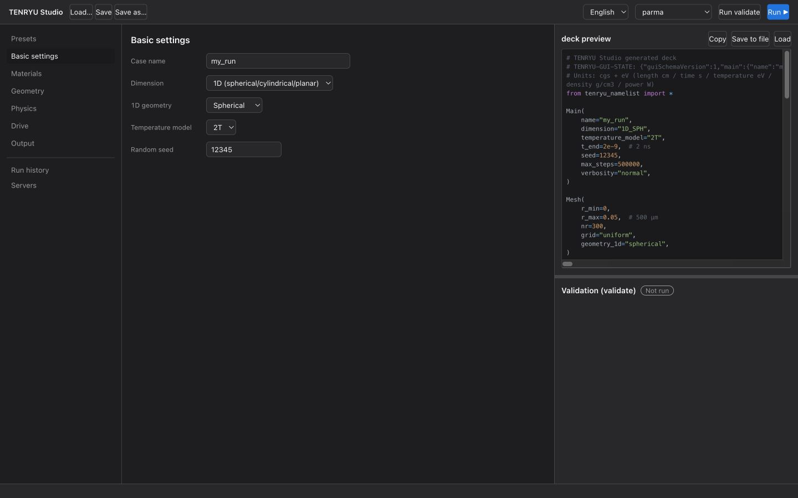
The header contains Open, Save, Save As, the language selector, execution-server selector, Validate, and Run ▶. The left navigation contains Presets, Basic, Materials, Geometry, Physics, Drive, Output, Run History, and Servers. The selected form appears in the center, while the deck preview and validation panel appear on the right.
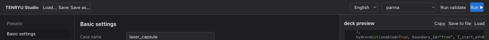
2. Three-minute quick start
-
Open Presets in the left navigation and select the 1D tab. On the card closest to your intended problem, click “Apply this preset.”
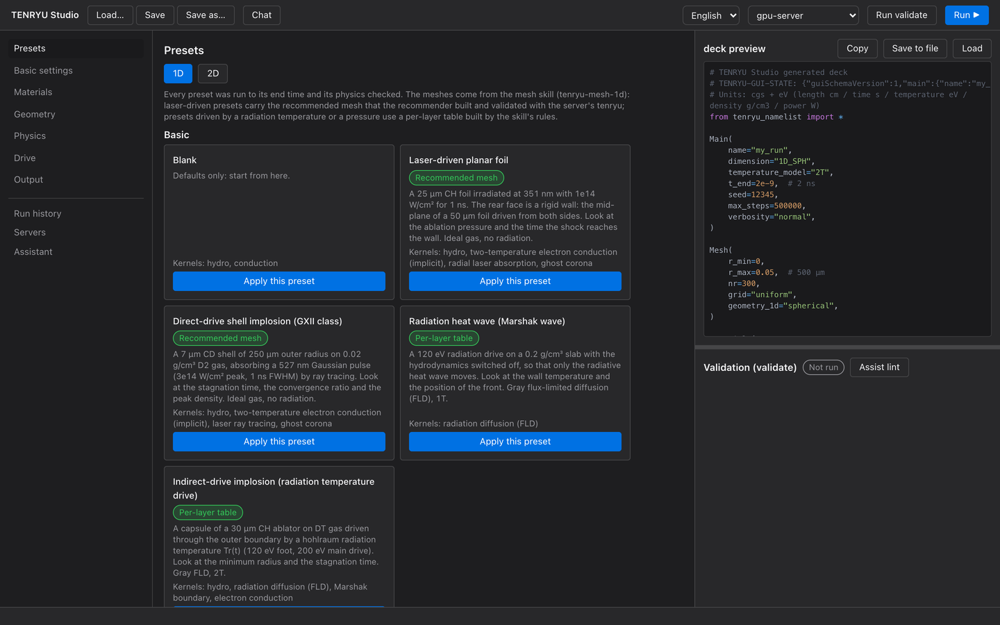
Starting from a verified 1D preset populates the form with a complete, consistent set of settings. -
Review the generated content in the deck preview on the right.
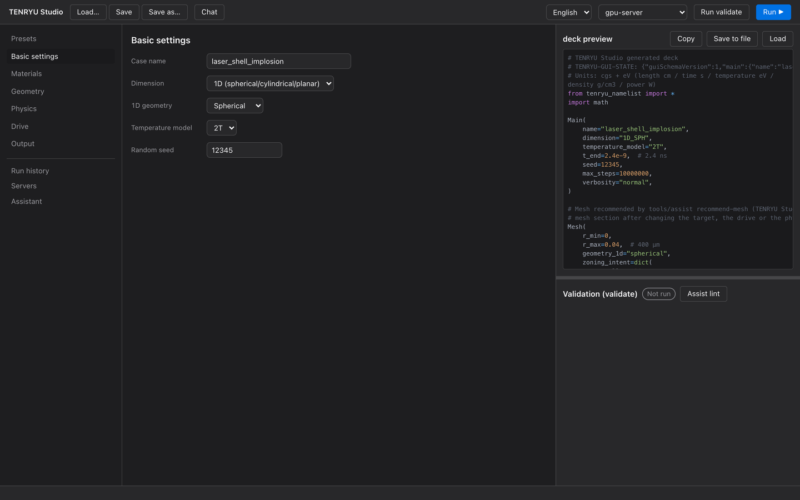
The deck preview immediately after applying a preset. Form changes appear here automatically. - Use “Save to file” to write the deck, then run
./build/tenryu run <deck>.py. If an execution server is configured, you can instead submit it with Run ▶ in the header.
3. 1D presets (with verification runs)
The 1D tab of the presets has six basic presets (the blank one included) and six that use optional kernels. Every preset but the CBET one was run to its end time on an RTX 4090 on 2026-10-01 and checked against a run on a twice finer mesh; each card shows the result under "Verification run". The meshes come from the mesh skill (tenryu-mesh-1d): the laser-driven presets carry a recommended mesh, those driven by a radiation temperature or a pressure a per-layer table (§6). The card mark "Needs the tables" means the preset reads TMAT-H5 tables; "Heavy run" means hours on one GPU.
| Preset | Kernels | Verification run in brief |
|---|---|---|
| Basic | ||
| Blank | hydro, conduction (defaults only) | — |
| Pressure-driven shock | hydro, pressure boundary condition | The shock speed matches the exact Rankine-Hugoniot value within 0.01 %. The density behind the shock is 0.6 % high and does not improve on a finer mesh (cause not identified). |
| Radiation heat wave (Marshak wave) | radiation diffusion (FLD) | At 1 ns the electron temperature at the wall is 104 eV and the front is 37.9 µm from the wall; mesh difference 0.16 %. |
| Laser-driven planar foil | hydro, two-temperature electron conduction, radial laser absorption, ghost corona | Absorption 89 %, the shock reaches the rear wall at 0.62 ns, ablation pressure 17 Mbar; mesh difference of the absorbed energy 3.3 %. |
| Direct-drive shell implosion (GXII class) | hydro, two-temperature electron conduction, laser ray tracing, ghost corona | Absorption 67 %, stagnation at 1.83 ns, convergence ratio 5.0, peak density 141 g/cm³; mesh differences within 0.5 %. |
| Indirect-drive implosion (radiation temperature drive) | hydro, radiation diffusion (FLD), Marshak boundary, electron conduction | Stagnation at 2.42 ns, minimum radius 47 µm, convergence ratio 6.7. On a finer mesh the outermost boundary cell keeps accelerating (a known defect); the drive ends at 2.6 ns. |
| Optional kernels | ||
| Radiation-driven planar foil (S_N transport) | radiation S_N transport (4 groups, 16 directions), hydro, electron conduction | The shock reaches the rear wall at 0.74 ns; ablated mass 3.1 mg/cm²; the S_N iteration converged at every step. |
| Nonlocal electron transport (SNB) | nonlocal electron conduction (SNB), hydro, radial laser absorption, ghost corona | Absorption 86 %, ablation pressure 58 Mbar. The absorbed energy differs by 7.0 % on a finer mesh, outside the convergence target (3 %). |
| Direct drive with CBET and hot electrons | CBET (port layout), hot electrons (TPD, SRS), laser ray tracing, hydro, electron conduction | No verification run to the end time yet (the run is expensive). CBET and the hot electrons have been checked only over the first tens of picoseconds. |
| Burning exploding pusher | fusion burn (DT), plasma viscosity, ion conduction, radiation diffusion (8 groups), hydro | DT neutron yield 3.9e10, bang time 2.74 ns; mesh difference of the yield 1.5 %. The known outer-boundary defect appears on a finer mesh. |
| Material tables and multigroup radiation | table equation of state, table opacity, multigroup radiation diffusion (FLD), hydro, laser | Absorption 87 %, the shock reaches the rear wall at 0.64 ns. Values are clamped 9.4 million times during the run; which quantity is clamped has not been identified. |
| Two-layer target in cold equilibrium (CD on liquid D2) | cold-equilibrium constitutive branch, table equation of state, hydro, laser | Absorption 88 %, the shock reaches the rear wall at 1.36 ns; every compared quantity within 2.4 % on a finer mesh. |
In the planar presets the rear face (r = 0) is a rigid wall: the mid-plane of a foil driven from both sides. The compression after the shock reaches the wall comes from the shock reflected there; it is not an implosion's stagnation.
4. Basic settings

- Case name: Becomes the output directory name
outputs/<name>. - Dimension: This manual uses 1D. 2D RZ mode is outside the scope of this manual (covered separately).
- 1D geometry: Choose spherical, cylindrical, or planar symmetry.
- Temperature model: 2T is recommended in general. 1T is intended for simple problems such as the radiation slab.
- Random seed: The seed used to reproduce stochastic processes.
- Maximum steps: The upper limit on the number of calculation steps.
- End time
t_end: The physical end time of the simulation, in s.
5. Materials
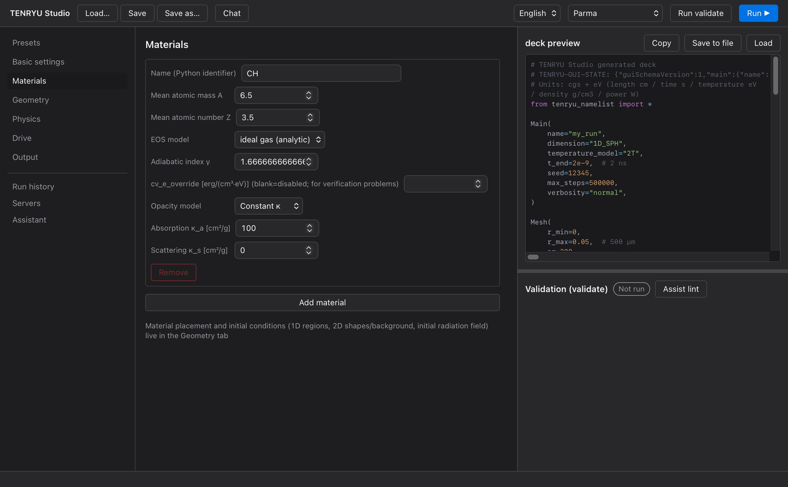
- A/Z: Specify atomic mass A and atomic number Z.
- EOS: For
ideal_gas, specify γ and override cve if needed. For a TMAT table, specify the table file. - Opacity: For
constant, specify κa and κs [cm²/g]. Tabulated opacity is also available. - Reference state: Appears when the treatment of cells below
T_starton the Physics tab iscold_equilibrium. Specify the reference density ρ0, electron temperature Te0, ion temperature Ti0, total pressure P0, and bulk modulus K0 (eos.cold_reference). Selecting the mode fills in the density and temperatures of the first region made of the material (P0 = 0); "Fill from initial state" copies them again. Enter K0 per material (literature examples: liquid D2 1.2×109 dyn/cm², polystyrene 5.8×1010 dyn/cm²).
6. Geometry: mesh and regions
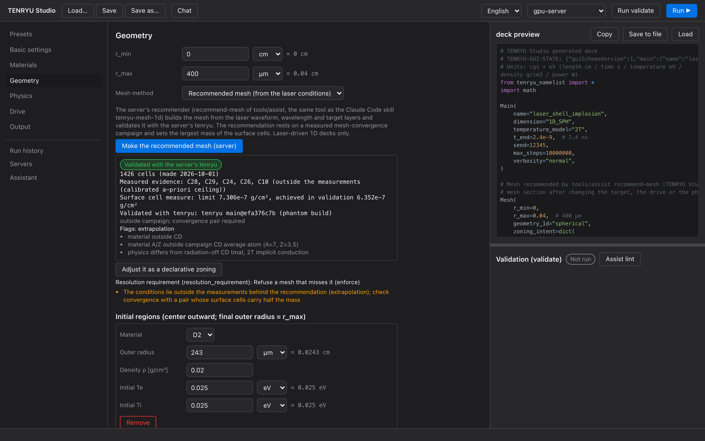
Mesh methods (1D)
The 1D mesh is a Lagrangian mesh that moves with the fluid. Choose one of six methods under “Mesh method”. Switching methods keeps the settings of the others.
| Method | Written to the deck | Use |
|---|---|---|
| Uniform | nr, grid="uniform" |
Trial runs. Not for runs that need fine cells at the surface. |
| Graded | Cell counts per segment and grading |
The earlier specification, kept for existing decks. |
| Recommended mesh | zoning_intent and resolution_requirement (apply="enforce" with the empirical ceiling empirical) |
Laser-driven decks. The recommender builds it on the server and the server's tenryu validates it. |
| Per-layer table | explicit_nodes (nodes computed by Studio) |
Decks driven by a radiation temperature or a pressure; conditions far outside the recommender's range. |
| Imported node coordinates | explicit_nodes |
Reusing another code's zoning or the mesh of an earlier run. |
| Declarative zoning (zoning_intent) | zoning_intent |
Editing a recommended mesh; writing the measure, bands, pins and weight profile directly. |
Recommended mesh
“Make the recommended mesh (server)” runs TENRYU's mesh recommender (tools/assist/assist.py recommend-mesh, the same tool the Claude Code skill tenryu-mesh-1d uses) on the selected server. The recommender has the server's tenryu read the target and the laser of the form (validate --mesh-preview), sets the ceiling on the areal mass of the surface cells from a campaign that measured mesh convergence, builds a zoning_intent, and validates it with the server's tenryu before returning it. A recommendation that fails validation is not put into the form.
- The panel shows the validation status, the cell count, the measurements the recommendation rests on, the surface-cell ceiling and the value achieved in validation, the flags, and the recommender's warnings. The flag
extrapolationmeans the conditions lie outside the measurements and a calibrated a-priori ceiling was used; check convergence with the convergence pair then. - A recommendation belongs to the geometry and domain, the target's layers (radii, densities, materials), the laser wavelength and waveform, the end time, the temperature model, and the radiation and conduction settings. Changing any of them after the recommendation shows “conditions changed”; recommend again.
- Laser-driven 1D decks only (the solver's resolution requirement follows from the laser conditions). The recommender assumes a bare target surface, so it does not work with a material corona ramp; use the laser's ghost corona (§8).
- The server needs a TENRYU checkout (
tools/assist) above the tenryu binary and python3 (3.9 or later). - “Adjust it as a declarative zoning” moves the recommended
zoning_intentto the editable method (the panel records that it was edited by hand).
Per-layer table
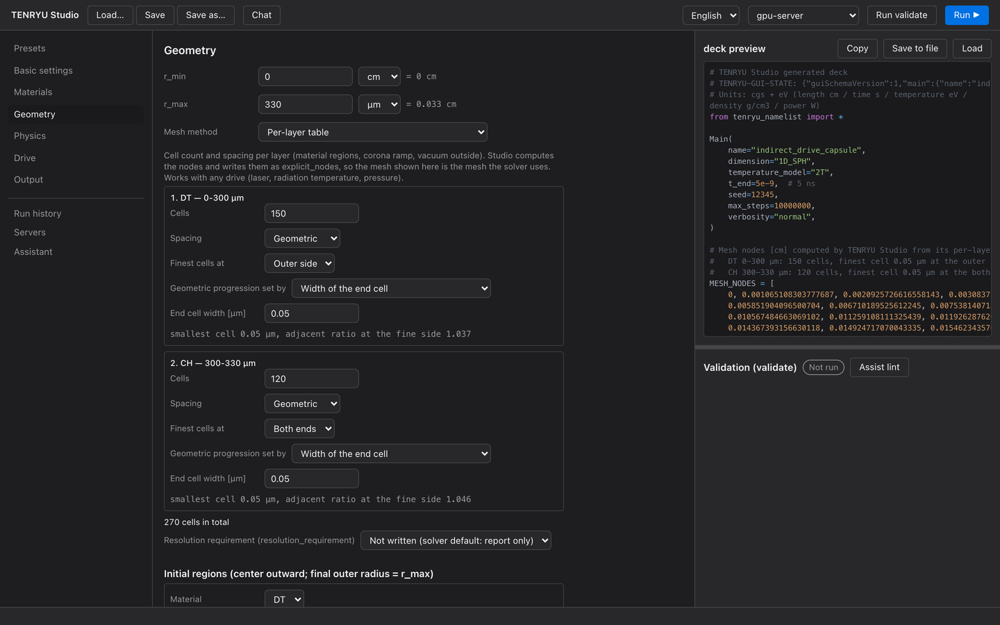
For each layer (a material region, a corona layer, the outer vacuum) choose the cell count and the spacing: equal width, equal mass, or geometric. A geometric layer takes its ratio from the ratio between neighbouring widths, from the width of the end cell, or from matching the mass of the neighbouring layer's end cell, and refines its outer edge, inner edge, or both. Studio computes the nodes and writes them to the deck as explicit_nodes, so the mesh shown is exactly the mesh that runs. Each layer shows its smallest cell width and the adjacent ratio at its fine edge.
Imported node coordinates
Paste node coordinates (one per line, or separated by commas or spaces; for a table choose the column, and choose the unit) or read them from a file (.txt, .csv, .dat, or a run's frozen configuration config/<case>_frozen.json). “Use the mesh checked on the server” takes the mesh last checked on the server (the one the solver built from a recommended mesh or a declarative zoning) as a node list. Choosing a run in the run history takes that run's mesh (the node list of its frozen configuration, or else the mesh the server builds from the run's deck). Importing sets r_min and r_max to the first and last nodes.
Declarative zoning (zoning_intent)
Edit the solver's declarative zoning directly: the cell count n_cells, the measure to equidistribute measure (width, areal mass, line mass, cell mass), density intervals for zoning, pins at material interfaces, the weight profile, local refinements, bands (lower and upper bounds on the cell measure over ranges of the cumulative measure), the minimum cell width, the preferred and maximum adjacent ratios, and the minimum cells per segment. The solver computes the nodes; the mesh diagnostics show the mesh of the nodes Studio computes the same way, replaced by the solver's mesh after a check on the server.
Resolution requirement (resolution_requirement)
For laser-driven decks the solver computes an upper limit on cell size from an ablation rule and a shock rule (the resolution requirement). “Do not write” leaves the solver default (report only), “Report only” writes apply="report", and “Stop if not met” writes apply="enforce". A recommended mesh writes enforce with the empirical ceiling (empirical) the recommendation rests on.
Mesh diagnostics
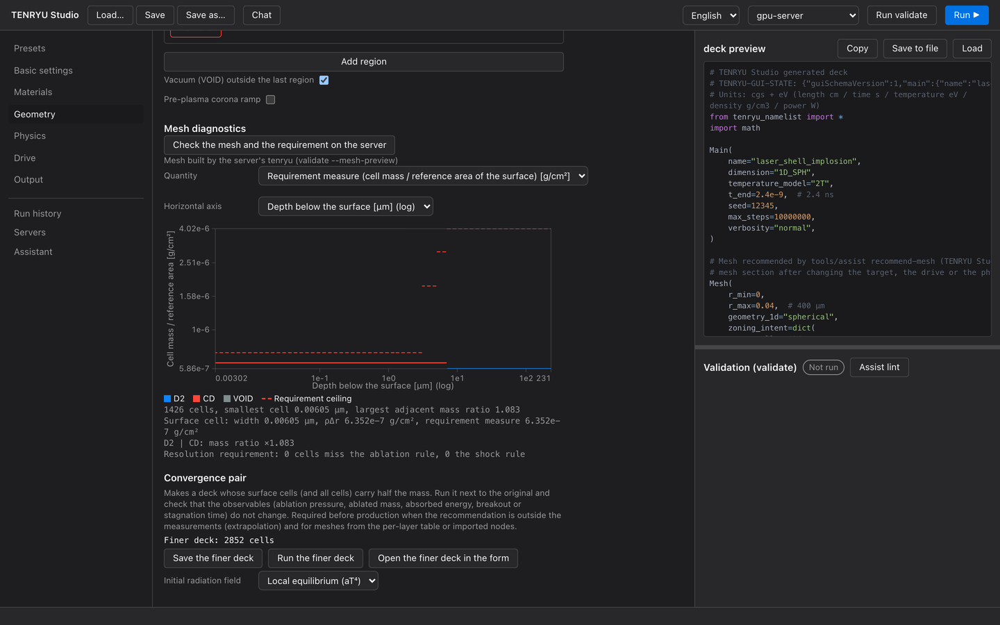
The properties of the mesh are shown as a plot and as numbers. The quantity can be the cell width, the areal mass ρΔr, the requirement measure (cell mass divided by the reference area of the surface), the mass ratio to the next cell, or the cell mass; the horizontal axis can be the position r, the depth below the surface (log), or the cell index. Below the plot are the cell count, the smallest width, the largest adjacent mass ratio, the surface cell, and the mass ratios at material interfaces.
“Check the mesh and the requirement on the server” runs tenryu validate --mesh-preview on the selected server and overlays, on the mesh the solver builds, the requirement ceilings (red dashed) and the cells above them (red dots). The solver computes the nodes of the recommended mesh and of the declarative zoning; before this check the plot shows the nodes Studio computes with the same zoning as the solver, or the solver's error when it refuses the zoning_intent. With the requirement on enforce, the solver adds the requirement ceilings to the zoning_intent before zoning, so its final mesh differs from the plot where they are stricter than the intent's bands (a note under the plot says so). When the form changes, the panel marks the shown server result as out of date.
Convergence pair
Makes a deck whose surface cells (and all cells) carry half the mass: uniform and graded meshes double their cell counts; a per-layer table doubles its cell counts, takes the square root of its ratios and halves its end widths; imported nodes split every cell into two of equal volume; a recommended mesh or a declarative zoning doubles its cell count and halves its bands, its measure bounds and its minimum width. The case name and the output directory get _fine. Run it next to the original and check that the observables (ablation pressure, ablated mass, absorbed energy, the time the shock reaches the rear, the stagnation time, and so on) do not change. It is required before production when the recommendation is outside the measurements (extrapolation) and for meshes from the per-layer table or imported nodes. Use “Save the finer deck”, “Run the finer deck”, or “Open the finer deck in the form”.
Regions
Stack material regions from the inside outward. Each region specifies a material, outer radius rOuter, density, initial electron temperature Te, and initial ion temperature Ti. By default, the final region's rOuter must equal r_max.
Outer vacuum (VOID)
Enabling Outer vacuum masks the area outside the final region with the VOID material. This requires rOuter < r_max. Conduction and radiation do not pass through VOID, avoiding numerical pathologies caused by filling a vacuum region at the density floor.
Preplasma/corona ramp
When Outer vacuum is enabled, you can also enable the corona ramp. It places a low-density corona that decays exponentially from the final region's surface, specified by scale length L, extent, ρ0, and density floor.
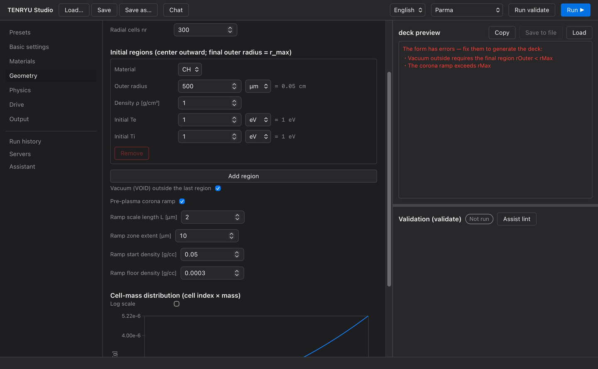
rOuter=r_max, the right pane switches to a red error list. Correcting it to rOuter < r_max automatically resumes deck generation.7. Physics
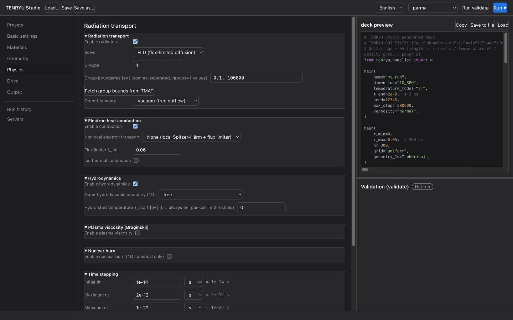
Radiation transport
Enable radiation transport and select FLD (flux-limited diffusion) as the solver. Specify the number of groups and group boundaries [eV]; one group gives gray transport. The outer boundary can be vacuum or Marshak. The Marshak temperature can be a constant Tr or a piecewise-linear Tr(t) linked to indirect drive in the Drive tab.
Electron thermal conduction
After enabling electron thermal conduction, select a nonlocal electron-transport model. “None” gives local Spitzer–Härm (SH); “SNB” gives nonlocal transport. The flux-limiter coefficient f_lim appears below the model selector and is set automatically when the model changes: SH → 0.06 (calibrated limiter), SNB → 0.5 (safety cap). Because SNB itself supplies the nonlocal suppression, leaving a small f would mask the SNB physics.
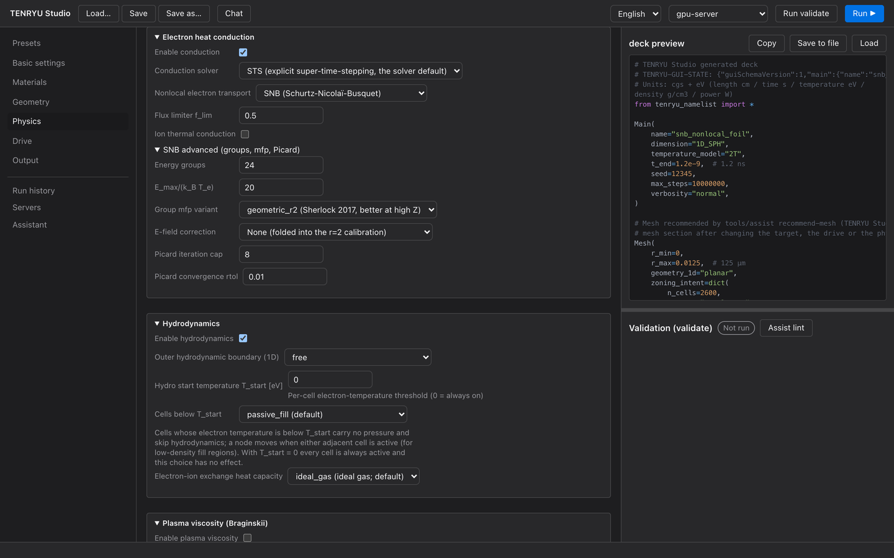
The SNB defaults are 24 energy groups, Emax/(kBTe)=20, group-mfp variant geometric_r2 (Sherlock 2017), no electric-field correction, Picard iteration limit 8, and rtol=0.01. The electric-field correction is already folded into the r=2 calibration; combining it with local would count the correction twice.
The conduction solver is STS (explicit super time stepping, the solver default) or implicit (1D only). The implicit solver puts no conduction limit on the time step; the laser-driven example decks and most presets use it. The SNB nonlocal model is solved only with STS, so SNB with the implicit solver is a form error.
- Ion thermal conduction: Solves Braginskii ion heat conduction after the electron conduction (1D and 2T only; in 2D or 1T the form reports an error). When on, the ion flux-limiter coefficient
ion_f_lim(default 1 = the ion free-streaming flux) can be set. - Hydrodynamics: Set enabled/disabled, the outer boundary (
free/reflect/pressure), and the hydro start temperatureT_start[eV] (a cell starts hydrodynamics when its electron temperature reaches this value; 0 = always on). - Cells below T_start:
passive_fill(default; no pressure, follows the neighbours),rigid_wall(keeps volume and energy as a rigid wall; 1D only), orcold_equilibrium(1D only). Withcold_equilibriumhydrodynamics runs in every cell, and only while the electron temperature is at or belowT_startthe EOS is corrected so that each material's reference state is in mechanical equilibrium at total pressure P0 with bulk modulus K0 (the table is recovered aboveT_start). It requires a TMAT EOS for every material and 2T; selecting it sets the electron-ion exchange heat capacity totableand shows the reference-state fields on the Materials tab. The transition start, density range, and inversion iteration cap are under "details". - Electron-ion exchange heat capacity:
ideal_gas(default) ortable(EOS-table heat capacity; 1D only). - Plasma viscosity: OFF by default.
8. Drive
Select the drive type from None, Direct laser drive, Radiation temperature Tr(t) (indirect drive), or External pressure Pext(t).
Direct laser drive
Set wavelength, ray tracing, waveform, power, and pulse duration. In 1D, only the optics of a single reference beam are specified; direction, beam count, and power allocation are omitted because they have no meaning in 1D. Available waveforms are rectangular with rise/fall, Gaussian, and a piecewise-linear table.
“Use the ghost corona” places, outside the bare solid surface, a dilute corona that exists only on the laser mesh, so that the laser is absorbed from the start of the pulse (NUMERICS §5.7.5). It replaces the material corona ramp; all laser presets use it. The defaults (12 ghost cells, density fractions 0.03 to 0.99, electron temperature floor 50 eV, Z̄ from 1 to 4, a hand-off over 6 cells with decay length 2, the blow-off transition model on, laser-mesh refinement mesh_factor 0.1, and outer-edge density fraction 0.001) are the settings of the example suite and of the convergence campaign behind the recommended mesh. The deposit smoothing sets the number of passes and the weight per pass of a mass-weighted, conservative smoothing between neighbouring cells applied when the laser deposit is handed to the hydro cells; the presets use 3 passes with weight 0.25 (0 passes disables it, the solver default).
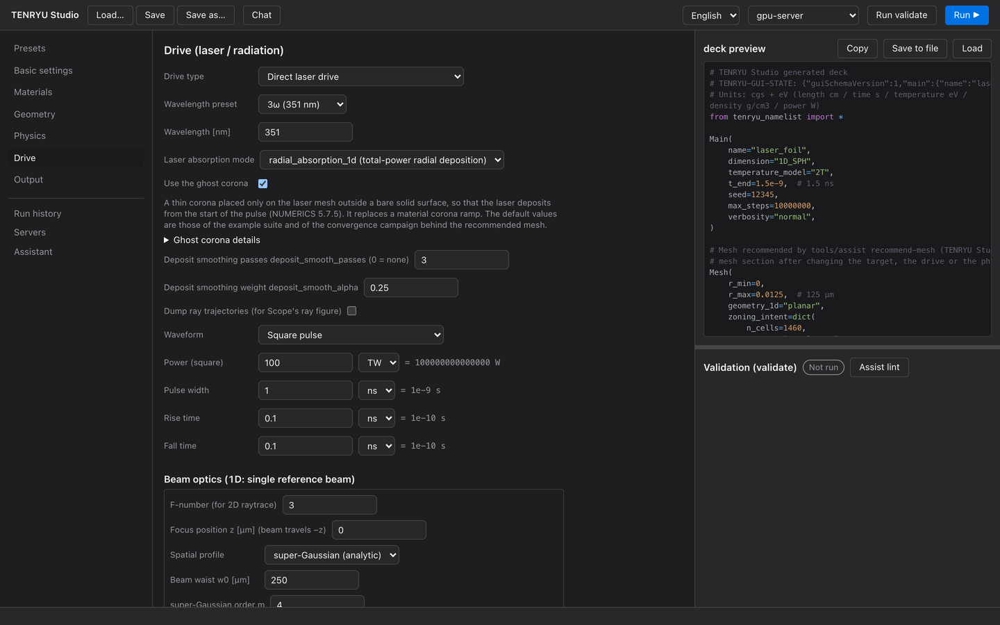
Beam optics
Set the f-number, spot size w0, and super-Gaussian order. The verified GXII values are f/3, w0=200 µm, and m=4.
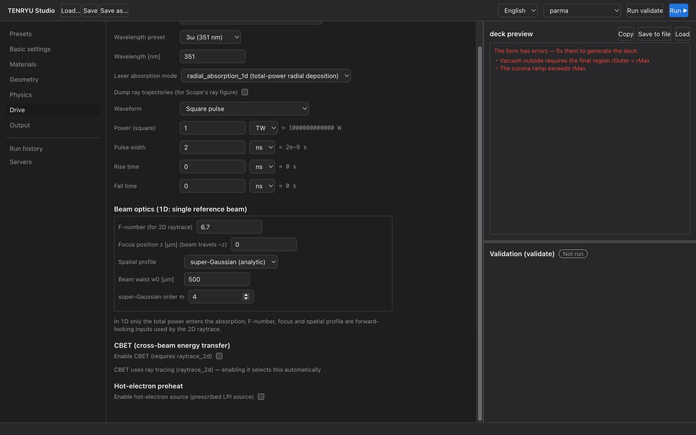
CBET
Enabling CBET reveals port-layout presets (idealized GXII 12 / OMEGA 60 / NIF 192 layouts), Δλ detuning, and related settings. This 1D-specific implementation computes multibeam energy exchange through phase-space reconstruction from a single reference trace.
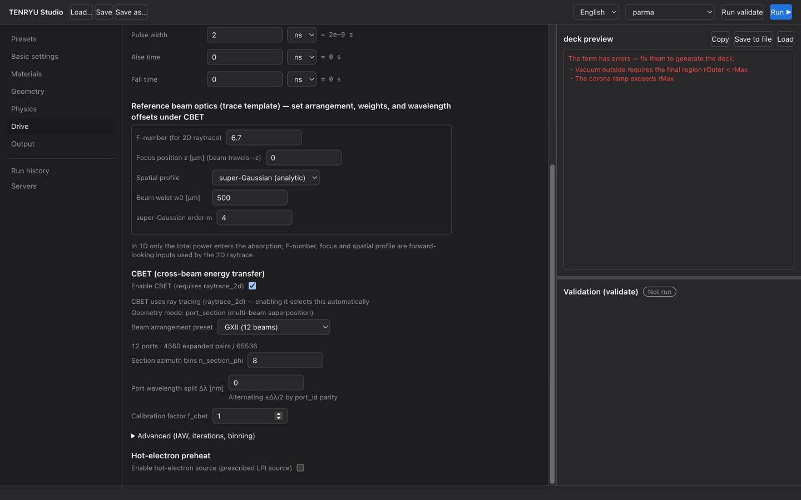
Hot electrons
Add fast-electron generation, transport, and deposition using an η(t) model and related settings.
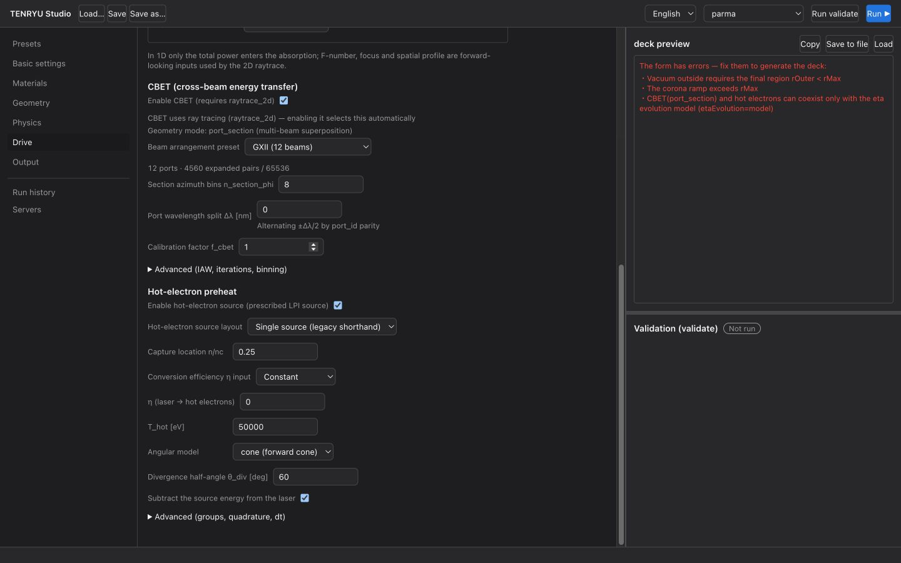
Indirect-drive Tr(t)
Selecting Radiation temperature Tr(t) as the drive type enables the Marshak Tr(t) waveform editor. See the verified indirect-drive preset in §3 for an example waveform.
External pressure
Specify the boundary-pressure drive Pext(t) for the 1D domain.
9. Output
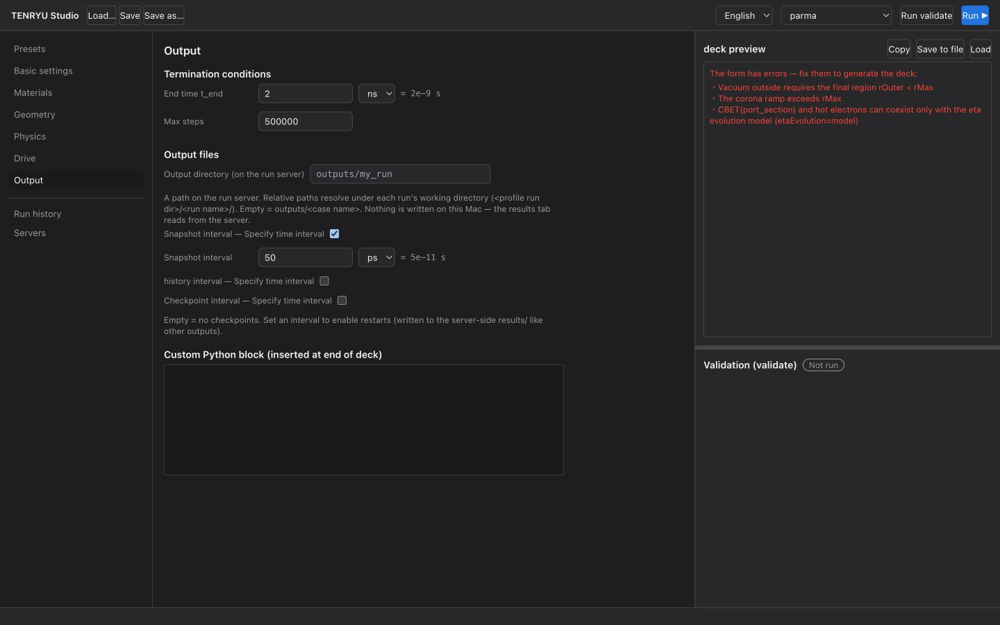
- Output directory: If blank, this is
outputs/<case-name>. - Snapshot interval: Set by
plot_every_s. - History: Saves time-series diagnostic quantities.
- Checkpoints: Configures output of restart data. Leave the interval blank to write no intermediate checkpoints.
- Checkpoint at the end of the run: Keeps a checkpoint of the final step (
Output.write_final_checkpoint, on by default). “Continue” in the run history needs this or an intermediate checkpoint. A tenryu built before 2026-09-30 does not know this key; turn it off when running such a binary.
10. Reviewing, saving, and running a deck
The right pane always displays the latest deck. Use Copy, Save to file, and Open to work with it.
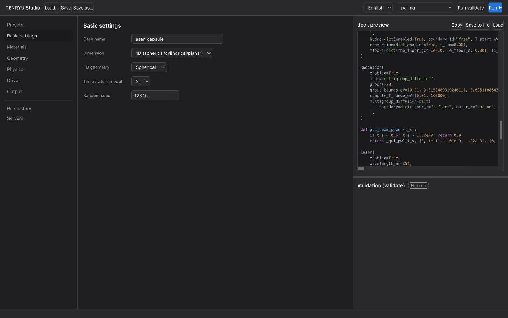
Validate performs a dry-run validation on the selected server. Run ▶ submits the job to that server; track its progress in the Run History tab. Even without a configured server, you can save the deck and run it locally as follows.
./build/tenryu run deck.pyContinuing a run
“Continue…” on a finished run in the run history opens fields for the end time and the step limit. Enter the values to extend to and press Start: the run restarts from its latest checkpoint in the same run directory on the server, with the same deck.py unchanged. Changed values are passed as tenryu run --t-end / --max-steps; with unchanged values the run restarts as before.
- The continuation writes to
outputs/<case-name>_001in the same run directory (_002the next time). The history charts join the run and its continuations, showing a continuation's values where it recomputed the part after its checkpoint; the profile snapshots list those of the run followed by those of each continuation. TENRYU Scope (“Open in Scope”) leaves the run's snapshots of the recomputed interval out of its list once every snapshot is prefetched, and builds the time-space diagram from the continuation there. - The latest checkpoint is the last one of the newest output directory. To continue from the end of a run, run it with “Checkpoint at the end of the run” on in the output tab; a run with intermediate checkpoints only recomputes from the last of them.
- The end time and the step limit must exceed the current time and step. In a deck with
LaserBeam.energy_Jthe laser power stays normalized over the original deck's end time, so a pulse that goes on after it adds energy in the extended interval (the amount is reported in a WARNING in the log). - Changed values need a tenryu from 2026-09-30 or later on the server (one that accepts
--t-endand--max-steps).
11. Assistant (experimental)
The アシスタント/Assistant view in the left nav provides LLM-driven 1D deck generation and deterministic run diagnostics. LLM features are disabled by default; the environment variable TENRYU_ASSIST_DISABLE=1 is the always-winning kill switch.
Setup
- The Mac needs python3 (from the Xcode Command Line Tools) and your own logged-in Claude Code or Codex CLI.
- No TENRYU checkout is needed on this machine. Choose a server profile under Documents and source and press Sync from server: documents, examples, and the source are fetched from the server checkout into the app configuration folder (the first question or deck generation syncs automatically when nothing is synced yet). The assistant harness (tools/assist) ships with the app, so the server checkout only needs docs/ and src/. Developers may point to a local checkout instead.
- In the LLM settings form of the Setup panel, choose providers (Claude Code / Codex CLI templates), models and role assignments and press Save: the file is written to the app configuration folder (macOS: ~/Library/Application Support/jp.osaka-u.ile.tenryu-studio/assistant.toml) and the status check runs again.
- Studio reads only the assistant.toml in its app configuration folder (LLM features stay at the disabled default until it exists). The CLI (tools/assist) also looks for ./assistant.toml and ~/.tenryu/assistant.toml (template: tools/assist/assistant.example.toml). The provider CLI (codex / claude) must be installed and authenticated on the local machine.
- Deck validation uses the currently selected server profile's binary (via tools/assist/tenryu_remote.sh for ssh profiles). Port, identity file, and host-key policy are forwarded automatically from the profile.
Questions
Type a question about TENRYU in the Question field and send it: Studio runs tools/assist/assist.py ask in the local checkout, and the provider configured for the question_answering role (a read-only CLI) explores the documents and source to answer. The path:line citations and namelist keys at the end of the answer are checked against the checkout automatically; anything that could not be verified is listed. Follow-up questions in the same conversation include the previous turns. The working directory is ask/<stamp>/ under the app configuration folder. The Chat button in the header (⌘J / Ctrl+J) opens a chat column on the right that is available from every view; Enter sends, Shift+Enter inserts a newline.
Deck generation
Write a natural-language specification and press Generate: the loop iterates generation → validate/freeze on the server → lint feedback (1–10 iterations). When the model asks instead of guessing (UNCERTAIN), answer in the reply box and regenerate. Accepted decks can be validated, saved, and run in place; runs enter the normal run history. Every LLM call is journaled in journal.jsonl under the workdir (generate/<stamp>/ under the app configuration folder).
Lint and diagnostics
- The validate panel's "Assist lint" runs the solver's validate/freeze plus mesh/zoning lints (node monotonicity, adjacent width ratio, autozone mass ratio, intent-pin checks) against the current form deck.
- Finished runs in the history view get "Diagnostics (assistant)": digest (history-series reductions and derived metrics), zoning report (mass-form ablation-zoning lint), and zoning promotion suggestions. The server needs python3 (h5py for digest) and a checkout containing tools/assist.
12. Troubleshooting
| Symptom | Cause | Action |
|---|---|---|
| Laser absorption is nearly zero | Corona ramp is disabled | Enable the ramp in §6. The default values are suitable. |
| The deck is absent and a red error list appears | Form validation error | Correct each listed item. For example, enabling Outer vacuum requires rOuter < r_max. |
| The shell does not implode under Marshak drive | Opacity is too low (τ<1 causes volumetric heating), or the foot is too long | Raise κ to the several-thousand cm²/g range appropriate for the real material and start the ramp earlier. Refer to the verified indirect-drive preset. |
| ρpeak is lower than the preset's stated value | Snapshot subsampling | Read the per-step history (§9). |
The run reports [dt_floor_abort] just before t_end |
Endpoint-rounding display in an older version (fixed on 2026-07-31) | Update to the latest version. |